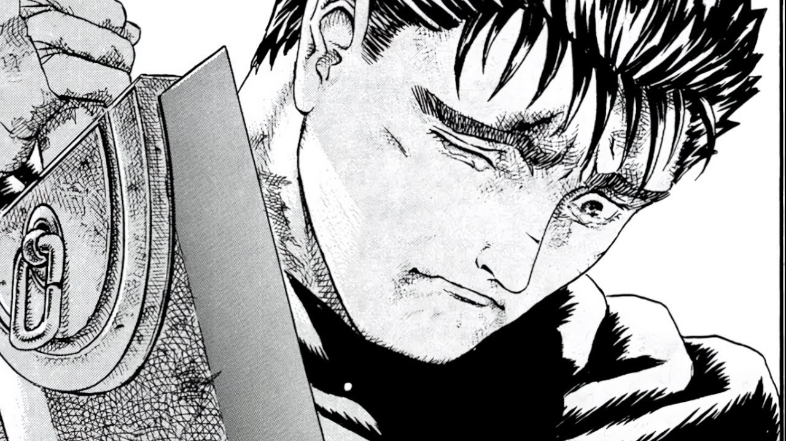

Личность: Пережив Затмение, Гатс становится мстительным, желая лишь
выследить и убить любого встречного апостола, а главное — отомстить
Гриффиту и Руке Бога. Он оставляет регрессировавшую Каску на два года,
чтобы вступить на тропу войны с демоническим родом. Во время двухлетней
охоты Гатс становится эгоцентричным и антисоциальным, равнодушным к
страданиям других и ненавидящим тех, кого он считает слабыми.
Внешний вид:Главный герой Берсерка — очень высокий широкоплечий мужчина
с сильно развитыми мышцами. Хотя он и выглядит на тридцать лет, он
разменял всего лишь второй десяток. Его закалила и состарила жизнь во
время войны. Во время событий Затмения Гатс потерял левую руку до локтя
и правый глаз. Правое веко постоянно закрыто, скрывая выколотый глаз;
только в манге «Прототип» Гатс показан носящим на глазу повязку. Он с
головы до пят покрыт шрамами и ожогами — наиболее заметный из них у
Гатса на переносице, от перенесенного ещё в детстве удара Гамбино. Самый
крупный шрам - горизонтальный, поперек груди, остался у Гатса после
встречи со Слан в Клипоте. Клеймо жертвы на шее, сзади справа является
более чем шрамом — это колдовской знак (клеймо жертвы), притягивающий к
герою демонов и заставляющий Гатса узнавать об их приближении: оно
начинает болеть и кровоточить, когда зло рядом. У Гатса карие глаза
(после Затмения — один карий глаз) и жесткие черные волосы; с
приобретением Доспехов Берсерка Гатс обзавелся седой прядью над лбом,
вероятно, от перенапряжения, вызванного ношением зловещих доспехов.
Из-за склонности Гатса к одежде и доспехам черного цвета во время охоты
на апостолов его Доспехов Берсерка. Во времена «Золотого века» Гатс
носил необычный шлем с массивным забралом, защищающим верхнюю часть
лица. Гатс оставил этот шлем, когда покидал Соколов, и в дальнейшем не
носил никаких шлемов до приобретения Доспехов Берсерка.
 На этих фотографиях мы видим так называемые "Доспехи Берсерка". На 1-ой
фотке показана броня в первом бою Гатса-внешний вид напоминает прошлого
владельца. А на 2-ой картинке Шлем принял вид головы Зверя Тьмы. Именно
эти 2 вида читатели запомнили больше всего.
На этих фотографиях мы видим так называемые "Доспехи Берсерка". На 1-ой
фотке показана броня в первом бою Гатса-внешний вид напоминает прошлого
владельца. А на 2-ой картинке Шлем принял вид головы Зверя Тьмы. Именно
эти 2 вида читатели запомнили больше всего.
Важная Информация--В четверг, 20 мая, токийское издательство
Hakusensha сообщило о смерти Кэнтаро Миуры — автора популярной во всём
мире манги «Берсерк». Он скончался 6 мая в Японии в возрасте 54 лет от
разрыва аорты. Мангака запомнился поклонникам работой над King of
Wolves («Король волков») и Oh-Roh, но приобрёл статус легенды после
начала публикации фэнтезийной истории о бойце с силами зла по имени
Гатс, которая происходит в декорациях Западного Средневековья.

BERSERK